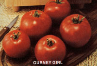

The Seasons of the Garden
Chill winter rules the slumbering garden, and-in many parts of the country-the soil snuggles beneath thick blankets of snow. Dull whites, grays, and browns mark the triumph of the cold dominion . . . but inside homes across the land -by the warm glow of blazing fires-the pages of seed catalogs fill imaginations with vernal fantasies of color and fragrance.
One of the real pleasures of gardening is planting some of the "new and improved, best ever, grows taller (or smaller) and bears over a longer period (or all at once)" varieties that are featured in the seed catalogs each year. We have been receiving advance notice of some of the newcomers . . . so here-for your planning and planting pleasure-are the introductions for 1981 !
Burpee is offering five new vegetable and fruit varieties for the forthcoming season. Green Goliath Broccoli matures over a three-week peri od, and sets side shoots after the center heads have been harvested.
The Streamliner Hybrid Cucumber is a compact plant that sets ten-inch fruit in unusual quantity ... thanks chiefly to the fact that all the blossoms are female. (Of course, a plant or two of a pollinating variety must be grown with the hybrid . . . but Burpee includes such seeds in each packet.) Streamliner Is mosaic and mildew resistant, and should be a real hit with wholistic gardeners.
Honeydew melon fans will want to try the Venus Hybrid Muskmelon , a short-season (88-day) delicacy with bright green flesh that has all the sweetness and aroma of a honeydew. And-because Venus slips easily from the vine when it's ready for picking-there's never any question as to whether the succulent melons are ripe.
Finally, Burpee has come up with a worthy successor to its famous Big Early tomato. Look for Early Pick Hybrid VF, which adds disease resistance and higher yield to the outstanding flavor of Big Early. The fruit of this husky indeterminate plant will begin to ripen in about 62 days.
Our good friends to the north, at Vesey Seeds, are offering four new varieties this year. Gold Rush Bush Beans mature large clusters of long, straight, golden pods in 54 days . . . and the treats will remain on the plant, in prime condition, for a very long time.
Raider Hybrid Cucumber is another gynoecious (or allfemale) variety. The compact vines are tolerant to mosaic and resistant to scab.
Harmony Hybrid is Vesey's entry in the bicolor corn contest. The closely packed ears mature in 73 days.
Big Set Hybrid tomatoes are perfect for the short Canadian season: They're extra early, but produce exceptionally large fruit!
Gurney's got a new "girl" this year, and she looks like a sure winner. Eight years ago the company set out to find a tomato that had real old-time flavor . . . and the folks from South Dakota have hit the jackpot! Their indeterminate variety Gurney Girl combines a tangy, delicious taste with high yield, great vigor, and an impressive degree of disease resistance: The plants are unaffected by tobacco mosaic, two types of Fusarium, Verticillium , and nematodes. Too often, disease resistance is won at the expense of flavor . . . so Gurney Girl appears to be a real triumph!
Summer squash plants are frequently infected with mosaic virus, and the result is often an unattractive green mottling on the fruit. Harris Seeds is introducing Multipik Hybrid, a beautiful buttery yellow squash which doesn't show the effects of mosaic mottling. It's early and prolific, too.
Harris is also offering Superstar Hybrid Muskmelon , a big (6- to 8-pound), delicious, productive fruit that holds its sweetness for up to a week after picking.
Park Seeds has developed a new multipurpose squash called the Kuta Hybrid. Its young fruit can be eaten raw or cooked, while the mature squash can be stuffed or baked.
Butterfruit is the new "supersweet" corn introduction from Park. The kernels are twice as sweet as ordinary corn, and the flavor lasts for days under refrigeration.
(Watermelon thumpers will want to try Park's Bushbaby ... a compact and vigorous improvement over previous bush melons.)
Epicure Seeds has combed the world's seed catalogs again, and come up with 26 new offerings for this year! You'll find pesto basil and red chicories from Italy, wild fennel from Sicily, dwarf cauliflower from Australia, an intensely aromatic parsley from Belgium, feldsalat (or corn salad) from Germany, and a disease-resistant Charentais-type melon from France!
EDITOR'S NOTE: To order the (usually free) catalogs offered by the firms mentioned above, see MOM's 1981 guide to the seed company "wish books" on page 46.
Hard on the heels of Park's Success With Seeds comes yet another important gardening volume from America's largest family-owned seed company. It is called Park's Success With Herbs, a 192-page volume by Connecticut herbalists Gertrude B. Foster and Rosemary F. Louden . . . and-forgive the punit's a dilly! This volume furnishes information on how to grow, pick, use, and preserve 100 different herbs . . . includes 350 color photographs of both seedlings and mature plants . . . supplies recipes for many of the unusual varieties listed . . . and crossindexes both common and Latin names.
Most people realize that herbs can be dried for off-season use, but Foster and Louden give detailed instructions for freezing many of the savory plants. Chervil, for example, loses its delicate flavor when dried . . . but retains its taste if it's spun in a blender-with water-and then frozen in ice cube trays. Basil, chives, coriander, dill, fennel, lovage, mint, sorrel, lemon balm, and sweet cicely-according to the authors-will all benefit from deep-freeze storage.
For beginning herbalists, the book provides a plan for a 9' X 15' garden that will hold more than 150 plants, . . . representing 25 species. You'll find information on interplanting herbs with other vegetable crops, too . . . and a discussion of the role of the aromatic greenery as an insect repellent. Park's Success With Herbs is worthy of a place on any gardener's bookshelf. To order, send $9.95 to Park's Success With Herbs, George W. Park Seed Co., Dept. TMEN, Box 31, Greenwood, South Carolina 29847.
|
 |
|
|